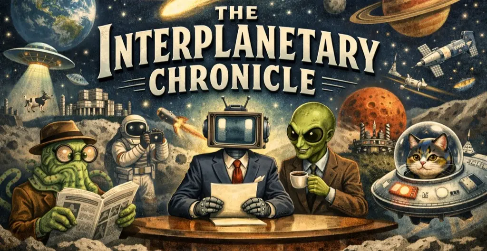

Because reality isn’t ridiculous enough
amthonie.nlIn this edition
Plagued by Plugs, Virga IV's Tectonics Turn Sour
A diplomatic effort to cork active volcanoes backfires catastrophically, leaving the South Federation somewhat unexpectedly on fire.
Mohjang’s Grand Experiment
Mohjang unveils a Venusian theme park that secretly mines a planet while visitors believe they’re merely enjoying themselves
Naarden’s Bold Mars Gambit Raises Eyebrows, Hopes, and One Very Confused Space Billionaire
A group of spectacularly self‑assured Naarders has stunned the region by announcing cosmically deranged plans to abandon Earth entirely and negotiate with space magnate Leon Sumk for their own hand‑picked Martian micro‑kingdom.
'I Am Still Alive!' Announces Tech Visionary From Scorched Martian Outpost After Earth Unlocking Protocol
Local tech billionaire successfully avoids Earth's regulatory frameworks by vaporizing the planet for fuel. Reports from Mars indicate a 90% workforce reduction due to local "hostilities," but the CEO remains highly bullish. "Hey, I am still alive!"
Flevoland Ceded to US in Global 'Greenland Compromise' as President Celebrates 'Beautiful New Island'
A diplomatic masterstroke leaves the Netherlands “devastated” as Flevoland is ceded to the US — while ministers quietly celebrate keeping the Waddeneilanden out of American hands.
Everything here is entirely fictional. Any resemblance to real people, events or planets is purely unfortunate.